このガイドでは、焙煎記録の入力から履歴の確認まで、すべての機能を詳しく説明します。
このアプリは、自家焙煎コーヒーの記録を簡単に管理できるWebアプリケーションです。ブラウザ上で動作し、インストール不要ですぐに使い始められます。
本アプリは、ブラウザの「ローカルストレージ」にデータを保存します。以下の点にご注意ください：
アプリは以下のセクションで構成されています：
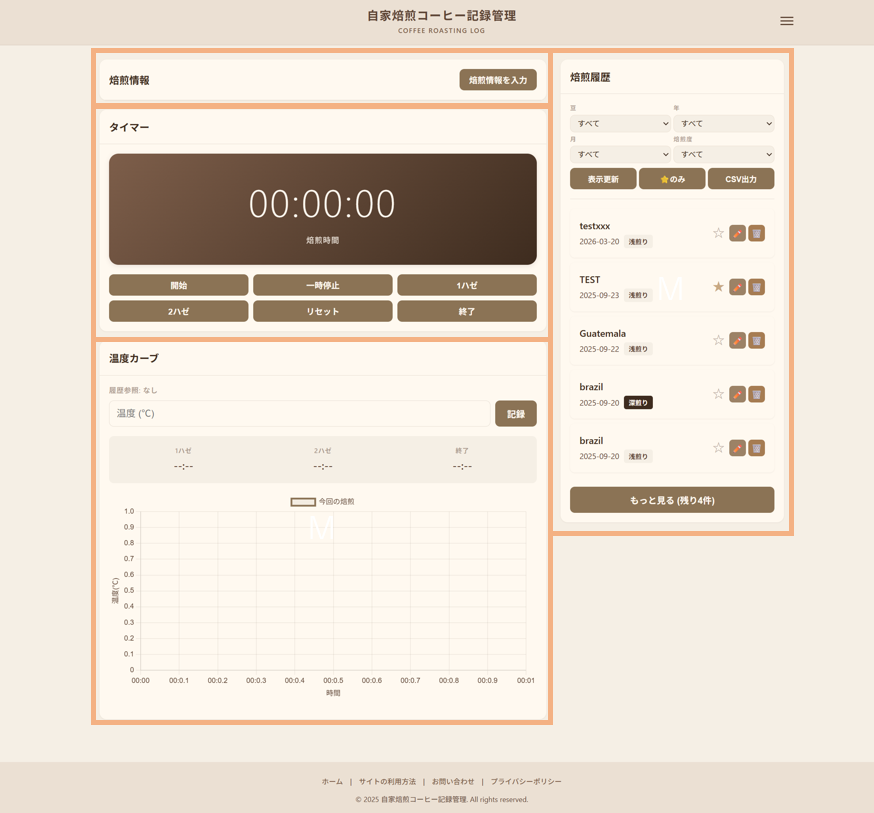
焙煎を始める前に、豆の情報を入力します。
初期状態では焙煎情報セクションは閉じています。「焙煎情報を入力」ボタンをクリックして開きます。
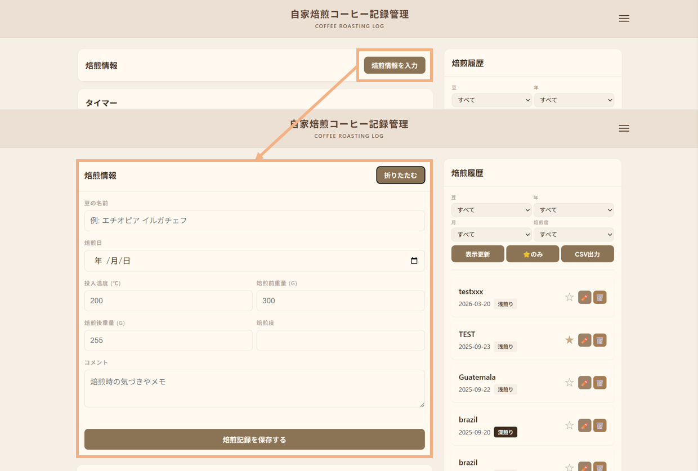
焙煎前重量と焙煎後重量を入力すると、焙煎度が自動計算されます。
焙煎時間を正確に計測します。
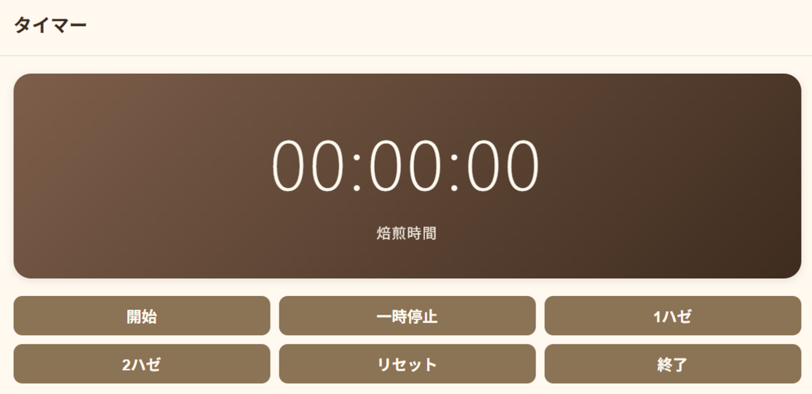
焙煎を開始したら「開始」ボタンをクリックします。タイマーが00:00:00から計測を開始します。
一時的にタイマーを止めたい場合は「一時停止」ボタンをクリックします。再度「開始」で再開できます。
ボタンを押すと温度入力画面が表示されます。
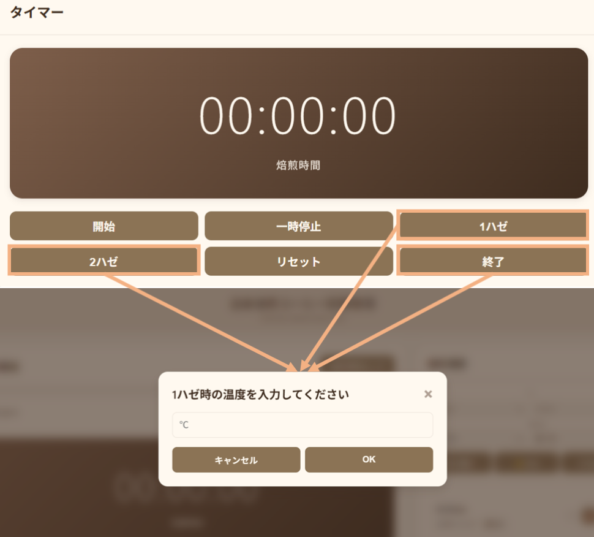
焙煎が完了したら「終了」ボタンをクリックします。終了時の温度を入力してください。
タイマーと温度データをすべてリセットします。
画面をスクロールしてタイマーが見えなくなると、画面右下に小さな円形タイマーが表示されます。
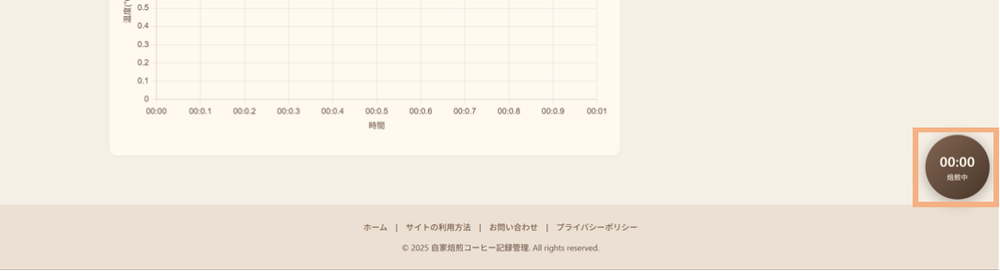
これにより、下部の履歴を見ながらでも焙煎時間を確認できます。
焙煎中の温度変化を記録し、グラフで可視化します。
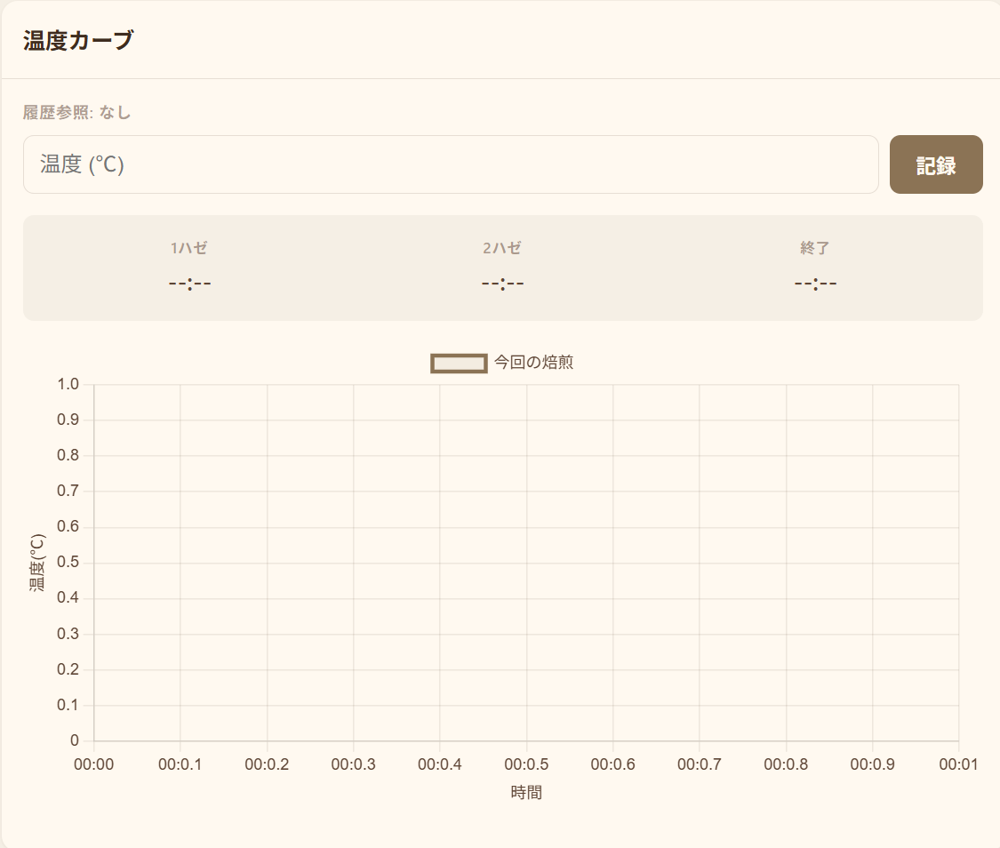
温度は何度でも記録できます。
以下のタイミングでは自動的に温度入力画面が表示されます：
1ハゼ / 2ハゼ / 終了の時間が見やすく表示されます。
記録した温度は自動的にグラフ化されます。
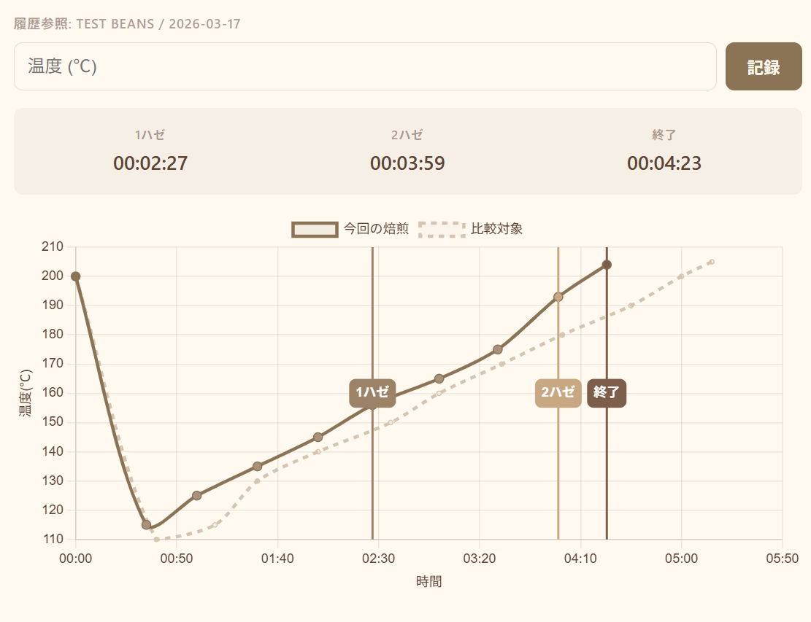
焙煎が完了したら、記録を保存します。
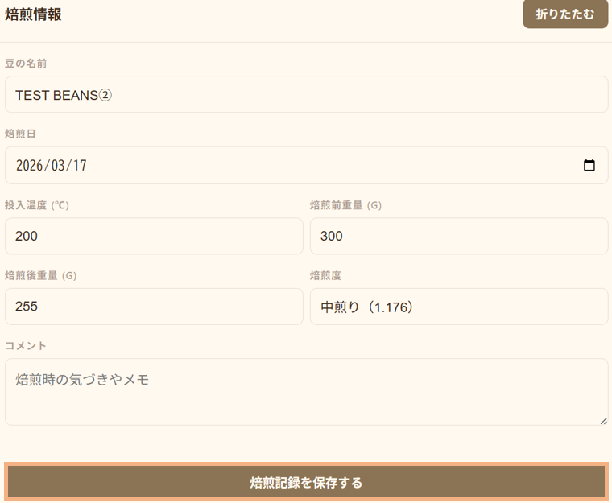
過去の焙煎記録を確認・検索します。
画面右側（またはモバイルでは下部）に焙煎履歴が表示されます。
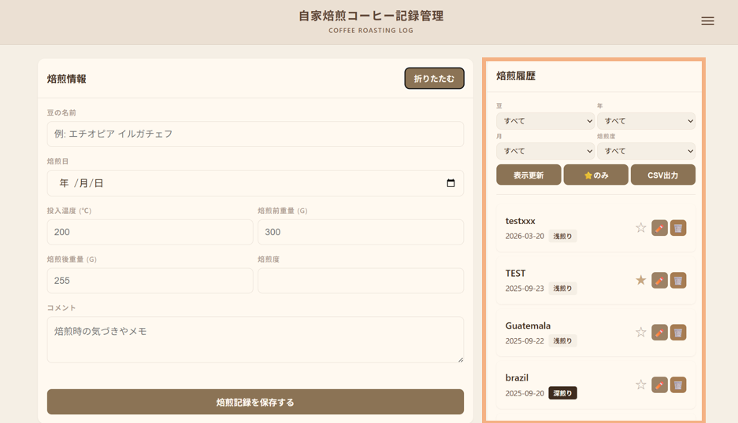
履歴を絞り込んで表示できます。
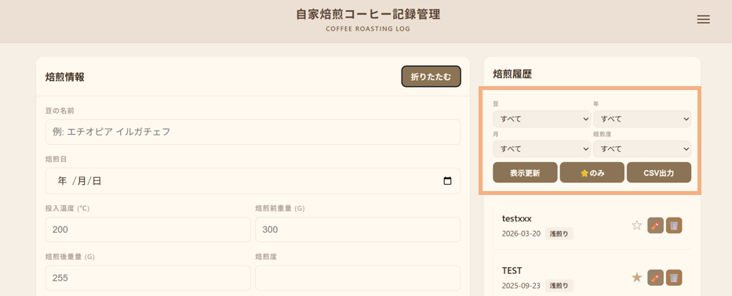
「⭐のみ」ボタンをクリックすると、お気に入りに登録した記録のみ表示されます。
各履歴カードには以下の操作ボタンがあります。
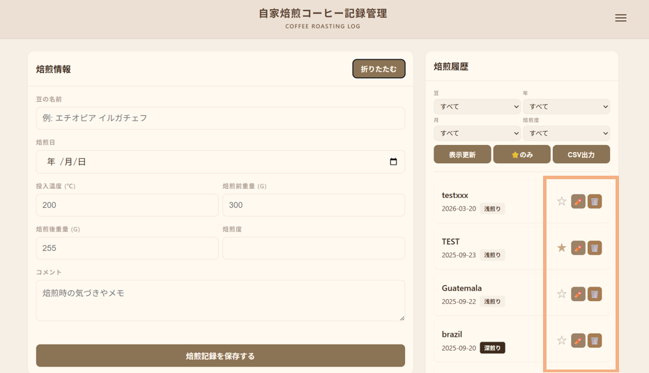
記録内容を編集できます。
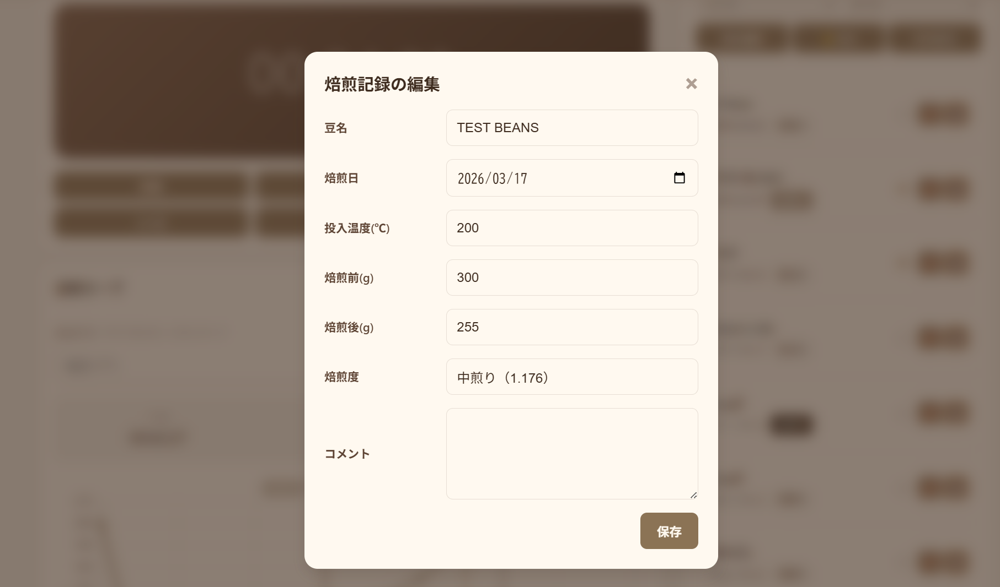
編集できる項目：
編集後、「保存」ボタンをクリックして確定します。
記録を削除します。確認メッセージが表示されます。
履歴カードをクリックすると、その記録の温度グラフが温度カーブセクションに表示されます。
これにより、過去の焙煎と今回の焙煎を比較できます。
焙煎記録をCSVファイルとして出力し、Excelやデータ分析ツールで活用できます。
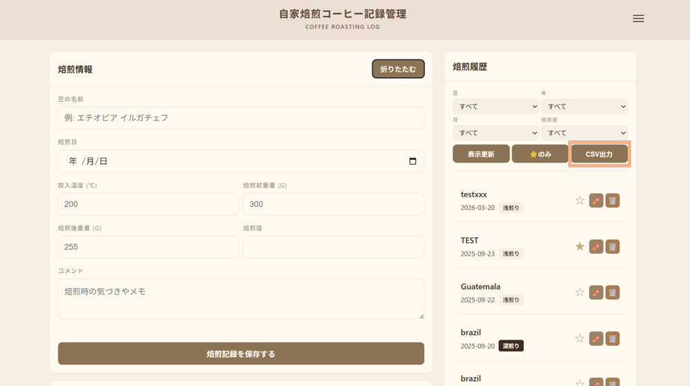
roast_log_YYYYMMDD.csvデータ分析に最適化された形式で出力されます。
| 列名 | 説明 | 例 |
|---|---|---|
| 記録ID | 一意の識別子 | 1234567890-abc123 |
| 焙煎日 | 焙煎を行った日 | 2026-03-07 |
| 豆名 | 豆の名前 | エチオピア イルガチェフ |
| 投入温度_℃ | 投入時の温度 | 200 |
| 焙煎前重量_g | 焙煎前の重量 | 300 |
| 焙煎後重量_g | 焙煎後の重量 | 255 |
| 減量率_% | 自動計算された減量率 | 15.00 |
| 焙煎指数 | 焙煎前÷焙煎後 | 1.176 |
| 焙煎度 | カテゴリ | 中煎り |
| 1ハゼ時間_秒 | 秒数（分析用） | 330 |
| 1ハゼ時間_mm:ss | 表示形式 | 05:30 |
| 1ハゼ温度_℃ | 1ハゼ時の温度 | 195 |
| 2ハゼ時間_秒 | 秒数（分析用） | 465 |
| 2ハゼ時間_mm:ss | 表示形式 | 07:45 |
| 2ハゼ温度_℃ | 2ハゼ時の温度 | 210 |
| 終了時間_秒 | 秒数（分析用） | 555 |
| 終了時間_mm:ss | 表示形式 | 09:15 |
| 終了温度_℃ | 終了時の温度 | 220 |
| 総焙煎時間_秒 | 秒数（分析用） | 555 |
| 総焙煎時間_mm:ss | 表示形式 | 09:15 |
| お気に入り | 0=通常, 1=お気に入り | 1 |
| コメント | メモ | 良好な仕上がり |
A. ブラウザのローカルストレージに保存されます。インターネット接続がなくても使用できますが、ブラウザのデータを削除すると記録も消えてしまいます。定期的にCSV出力でバックアップを取ることをおすすめします。
A. はい、スマートフォンでも快適に使用できます。画面サイズに応じてレイアウトが最適化されます。
A. 焙煎指数 = 焙煎前重量 ÷ 焙煎後重量 で計算されます。
A. 保存後に編集機能を使って修正できます。ただし、温度記録は追加できないため、焙煎中にできるだけ記録することをおすすめします。
A. 現在、データは各ブラウザのローカルストレージに保存されるため、端末間での共有はできません。CSV出力してデータを移行することは可能です。
A. 温度を記録していない場合、グラフは表示されません。最低でも2つ以上の温度記録が必要です。
A. リセットボタンを押すと以下がすべてリセットされます：
焙煎情報セクションの入力内容はリセットされません。
A. フローティングタイマーは、ページをスクロールしてタイマー表示部分が画面外に出た時のみ表示されます。タイマーが画面内にある場合は表示されません。
ご不明な点やご要望がございましたら、画面右上のメニューから「お問い合わせ」をご利用ください。
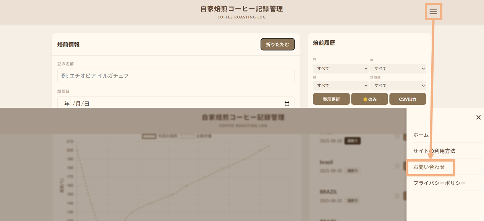